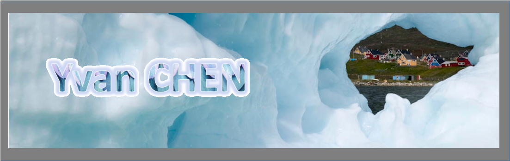
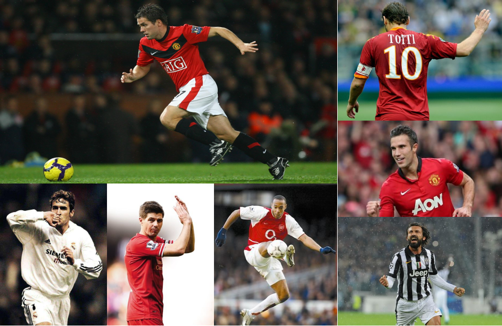
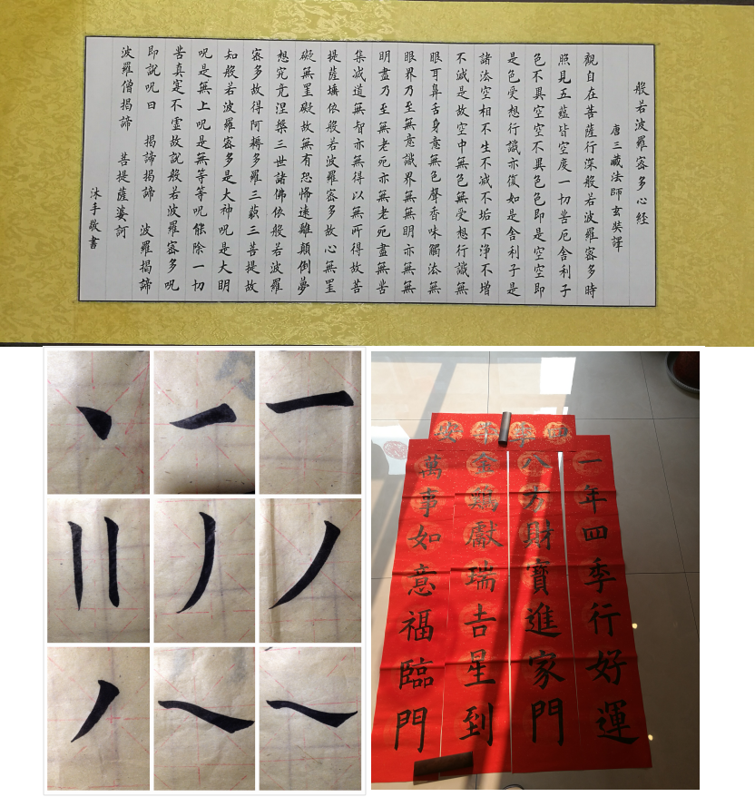
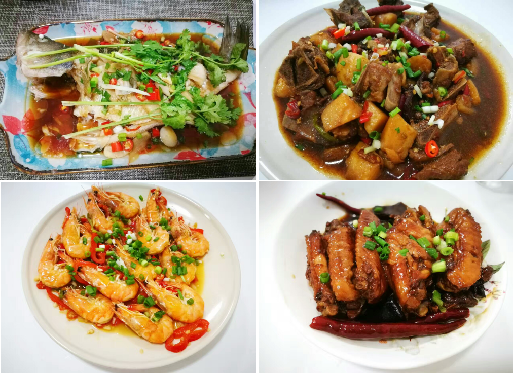

足球陪伴我度过了美好的童年时光。 对于很多人，他们就是那个陪伴自己最快乐足球岁月的绿茵恋人。 从相识、相恋，到不忍离别， 当他们从球场挥手告别，那一刻没有眼泪，因为他们留给我们太多美好的记忆。 那一刻回忆如此清晰，如同时光从未老去。



书法，让生活静心。
静心，让我的生活有了态度。
不争，不躁, 不妄动。
静心，让我的生活有了态度。
不争，不躁, 不妄动。

喜爱美食，是生活中的一件乐事。
做食物的人想方设法要让食物变得好吃，不过是为了让所爱的人吃得幸福。
吼吼吼~~，食物有很强大的治愈力量，应该没有人不喜欢美食吧。
家有两位大厨简直太幸福了。
做食物的人想方设法要让食物变得好吃，不过是为了让所爱的人吃得幸福。
吼吼吼~~，食物有很强大的治愈力量，应该没有人不喜欢美食吧。
家有两位大厨简直太幸福了。